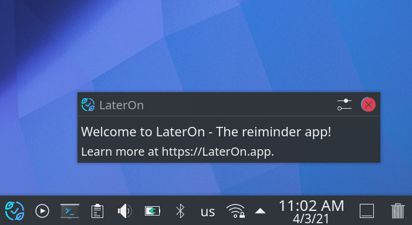
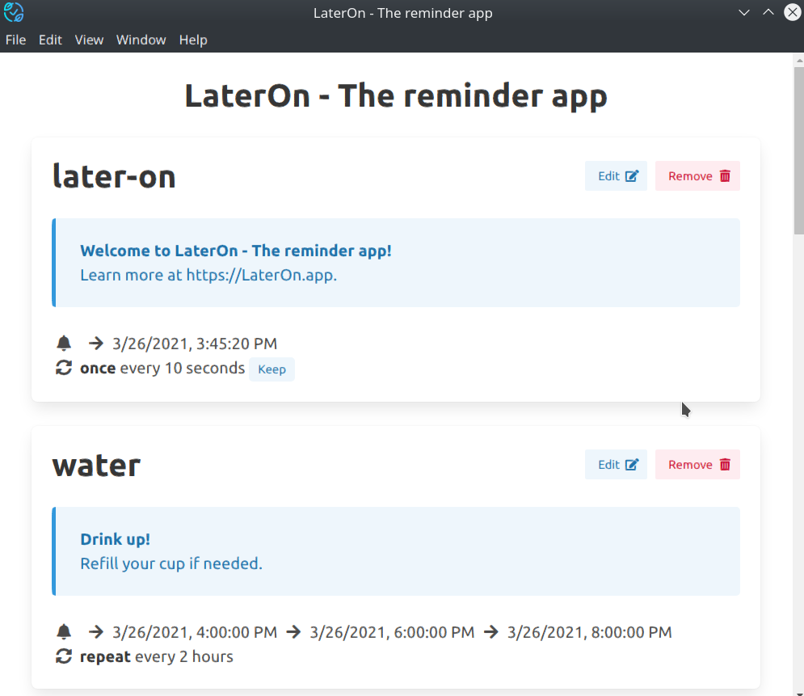

Introducing LaterOn - The reminder app
Posted under LaterOn onOne of the much requested features for Stretchly is having custom reminders:
- let me have water reminder every
Xhours, - remind me to stop working at
Y, - tell me to do
ZatW pm,
and such.
While I agree that they are useful for that person (and probably would be for different people as well), that's not what I am trying to do with Stretchly. Stretchly is the break time reminder app: it reminds to take a break and it gives science-based ideas, but it's up to the users how they are gonna implement them.
Plus I don't want to complicate the code needlessly.
But
When users asked me for such a feature, I always pointed out that there are apps that do the custom reminders. And that is so. But they do that in terms of on specific day remind me to do X. That's not very good, as what people were asking for was more of on specific times, every day or so, remind me to do Y.
Welcome, LaterOn!
Therefore I decided to hack-around an app that would do exactly that.
LaterOn lives in tray and then sends system notifications based on the scheduled reminders that user creates. Here's an example of the default notification that users get at the start of the app:

As notifications go, user can specify a title and body of said notification.

Users can view their existing reminders from tray "Reminders" menu. Example notification is show, together with the next occurrences and the rule. It's then also possible to edit, remove and add new reminders.
So yeah, go download it and give it a try!
(LaterOn is rather basic, right now, but works just fine for me :) )
Did you enjoy this? Copy-paste the link from the address bar to your favourite social network to share. Subscribe here.
comments powered by Disqus